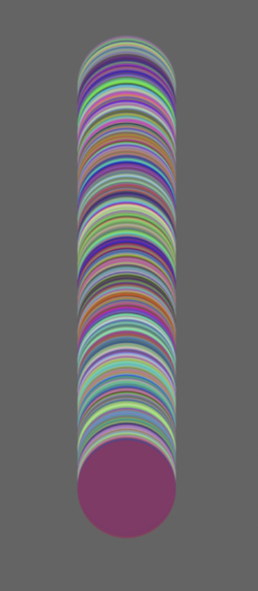

SAE 301
E-Commerce
- Comprendre
- Concevoir
- Développer
- Entreprendre
SAE 402
Affiche
- Concevoir
- Exprimer
- Développer
- Entreprendre
SAE 302
Branding
- Comprendre
- Concevoir
- Exprimer
- Entreprendre
SAE 301
E-Commerce
Compétences :
- Comprendre
- Concevoir
- Développer
- Entreprendre
1. Introduction
Le sujet qui nous est donné est le suivant : créer le front-office d’un site de vente en ligne reprenant la charte graphique de la marque « Birbone ». Ce site a pour vocation de vendre des tee shirts. Nous allons devoir mettre au cœur du projet l’expérience utilisateur ? Ceci induit la production d’une réflexion autour de trois axes : l’analyse des parcours utilisateurs, la modélisation et l’intégration. Tout cela en mettant en place une méthode AGILE.
2. UX- UI
La phase d’analyse à une grande importance dans la création d’un site de vente en ligne. Ce que l’on analyse c’est de quelle manière peut-on faire accéder l’utilisateur à l’achat d’un produit le plus rapidement possible. J’entends par rapidement le nombre de clics nécessaires. Les utilisateurs, qu’ils soient habitués au fonctionnement des e-commerces où non doivent pouvoir accéder rapidement à la phase d’achat. L’analyse porte ses fruits quand, peut-importe sur quelle page l’utilisateur se trouve, il est à deux ou trois clics de pouvoir valider l’achat d’un produit. Pour réaliser cette analyse, je me suis servi du service « FigJam » que propose le site Figma. FigJam permet la création de schéma et de carte. J’ai donc réalisé une carte des expériences utilisateur (figure 1).
Figure 1
3. Modélisation
Désormais, nous pouvons entreprendre la phase de modélisation sur un logiciel adapté. Notons, qu’il faudra respecter une charte graphique composée de trois couleurs :

Figure 2
Comme il nous à été conseillé, pour modéliser la maquette, je me suis inspiré de site comme zalando.fr, plus généralement des e-commerces qui utilisent une mise en page classique.
J’ai décidé d’intégrer un « header » et un « footer » qui seraient communs à toutes les pages (figures 3 et 4) .
Figure 3
Figure 4
A. Accueil
Pour la page d’accueil, j’ai opté pour une composition classique, comprenant un gros encart qui servira à annoncer une grosse nouveauté (ex: nouvelle collection, soldes etc.)(figure 5).
Figure 5
À la suite de cela, j’ai rajouté 4 sections contenant quelques produits faisant parti de la catégorie citée (figure 6).
Figure 6
B. Tee-shirts
La page tee-shirts doit être un étalage de tous produits de la marque (figure 6), cependant, l’utilisateur doit pour trouver ce qu’il cherche s’il a un type de produit en tête. C’est pour cela que l’on retrouve sur la partie gauche un encart permettant de filtrer et trier les produits par catégorie ou genre (figure 7).
Figure 7
Figure 8
C. Bons plans
La page Bons Plans doit contenir un autre type de produit, des « packs » contenants plusieurs produits et ayant un prix attractif aux yeux des utilisateurs. ON retrouve deux sections, la première contient deux têtes d’affiche (figure 9), la deuxième, contient le reste des bons plans (figure 10).
Figure 9
Figure 10
D. Qui sommes-nous ?
L’avant dernière page, la page Qui sommes-nous contient une visualisation des membres de l’équipe Birbone (figure 11) et un formulaire contact (figure 12).
Figure 11
Figure 12
E. Produit
Pour finir, la page Produit contient une section composée de : trois photos montrant le produit sous différents points de vue, son prix, sa description, de quelles matières il est fait, les avis des précédents acheteurs exprimés grâce à une note représentée par cinq étoiles, les tailles du produit disponibles, un encart permettant de choisir la quantité de produits que l’on veut acheter ainsi qu’un bouton permettant de valider nos sélections et de les ajouter au panier (figure 13). Sous cette section, on peut retrouver une section contenant quelques produits qui sont recommandés en fonction des goûts de l’utilisateur (figure 14).
Figure 13
Figure 14
4. Intégration
Après avoir modélisé notre site sous la forme d’une maquette (la version complète est accessible dans les annexes) il ne nous reste plus qu’à l’implémenter sous la forme d’un site web fonctionnel.
A. Structure
Étant donné que le front office est voué à être connecté à un back-office et donc à une base de données, j’ai préféré utiliser le modèle MVC vu l’an dernier pour implémenter mon site (figures 15 et 16).
Figure 15
Figure 16
Cette architecture favorise aussi l’implémentation de modules comme les « header » et les « footer » qui sont souvent communs à toutes les pages. De plus, c’est plus simple d’intégrer des éléments comme les catégories qui sont amenés à être réutilisés (figures 6 et 14) avec cette méthode et ça évite de se trompant en recopiant le code. Dans l’idée de faciliter l’intégration d’un back-office, j’ai implémenté une page login donnant accès au back-office. Cette page est accessible dans le header qui contient un bouton qui redirige vers la page login (figure 17).
Figure 17
B. Responsivité
Pour favoriser la responsivité du site j’ai préféré utiliser des pourcentages ou des vh/vw pour dimensionner mes éléments. J’ai également utilisé des Media-queries pour faciliter la responsivité (figures 18 et 19).
Figure 18
Figure 19
C. Hébergement
Comme pour les autres projets qui ont du être hébergés, j’ai choisi ionos.com. Je possède un abonnement me donnant accès à des bases de données, un nom de domaine et donc à un espace web. Tout cela me coûte environ 40 € par an. Vous pouvez donc retrouver le front-office hébergé à cette adresse.
Toutes les pages ont été vérifiées par le W3C validator.
5. Méthode AGILE
La méthode AGILE est une méthode travail basée sur le décorticage de chaque action en plusieurs étapes en incluant à chaque fois un feedback, c’est-à-dire faire tester nos avancées à des prospects ou supérieurs étant en mesure de nous dire ce qui ne leur plait pas et/ou ne fonctionne pas. Tout au long du projet, j’ai demandé à de très nombreuses reprises l’avis de mes camarades sur mes différentes avancées. J’ai aussi demandé l’avis de certains de mes amis qui ne connaissent rien à ce domaine pour avoir un autre point de vue et qui m’a permis de prendre du recul sur la situation.
Plus globalement, ma méthode de travail se décomposait en 3 points :
-
Séparer toute action, peu-importe sa taille en plusieurs étapes.
-
Prendre du recul sur mes avancées en demandant l’avis de potentiels utilisateurs, supérieurs et collègues.
-
M’adapter en fonction des retours obtenus pour satisfaire l’utilisateur et son expérience.
6. Conclusion
Pour résumer, nous avons décomposés le projet SAE 301 - intégrer des interfaces utilisateurs au sein d’un système d’information en 3 étapes. Cette décomposition est un exemple de méthode AGILE. Chaque étape à rendu celle d’après bien plus rapide. La phase d’analyse nous a permis de mieux comprendre le comportement d’un utilisateur sur un site, ce qui nous a permis de mieux visualiser notre site de vente en ligne en mettant l’expérience utilisateur au cœur de la réflexion. Ces deux étapes nous ont permis de réaliser la face d’intégration sans avoir d’incertitudes. La méthode AGILE est très rigoureuse mais permet au final de gagner beaucoup de temps.
7. Annexes
Carte FigJam
Maquette Adobe Xd
SAE 402
Affiche
Compétences :
- Concevoir
- Exprimer
- Développer
- Entreprendre
1. Introduction
Il nous a été demandé de réaliser une affiche interactive sur le sujet de la Paghjella. Pour cela, nous devions dans un premier temps réaliser une affiche « type impression » au format A2 que l’on rendrait interactive dans un deuxième temps.
Au vu du sujet, nous avons conclu que l’objectif de cette S.A.E est de donner une image plus moderne de la Paghjella tout en gardant l’essence de ce chant. Tout cela, en introduisant l’utilisateur au cœur de la démarche en accordant une grande importance au parcours utilisateur et à l’interactivité.
2. Création du visuel
Quand on nous évoque la Paghjella, l’image qui nous vient en tête est celle d’une puissante trinité qui transmet une énergie étant capable d’emplir tout l’espace qu’elle a à disposition. C’est ce qu’il se passe quand une Paghjella est chantée dans une église. Les trois voix des chanteurs additionnées à la réverbération que produit une église transmet une énergie envahissante qui ne s’arrête pas à nos oreilles mais va jusqu’à notre cœur.
A. Analyse du sujet et réponses envisagées
Dans un premier temps, nous avions pour idée de réaliser un mini jeu intégré à un site web qui aurait été l’extension de l’affiche imprimable. Nous voulions permettre à l’utilisateur de mieux comprendre ce qu’était une Paghjella en lui faisant trouver quelles voix allaient de pair mais nous ne trouvions pas de système qui serait assez intéressant d’un point de vue parcours utilisateur. Après quelques jours de réflexion nous nous sommes aperçus que réaliser ce jeu dans le temps imparti ne serait peut-être pas dans nos compétences. De plus, nous nous sommes rendu compte que cette ne nous inspirait aucune sens de réflexion concernant l’affiche. Ainsi, nous avons pris la décision d’abandonner cette piste sans condamner la réflexion produite.
En ayant les pensées introduites en début de chapitre en tête, deux styles de composition nous tendaient les bras.
Le premier style de composition repose sur la réalisation d’une affiche « chargée ». C’est-à-dire une affiche comportant beaucoup d’éléments ou/et une pluralité de textures. Le souci de ce genre de composition est que si cela n’est pas assez maitrisé nous risquons de perdre l’attention du lecteur/utilisateur qui n’aura pas trouvé de sens de lecture clair. Ce style pose un autre problème, l’intégration d’interactivité devient elle aussi très complexe et le visuel peut vite devenir trop chargés en composants.
Le deuxième style de composition, à l’inverse du premier, repose sur le « minimalisme ». Le minimalisme peut être assimilée à la simplicité. Ce style de composition permet une bonne lisibilité et réduit le risque de perte de l’attention du lecteur/utilisateur. De plus, nous avons considéré que ce style correspondait plus à l’idée que nous nous faisons de la Paghella. L’énergie produite par les chanteurs se repend dans un espace immense.
B. Style et construction de mise en page
Il nous est venu l’idée de placer un élément au centre de la composition (figure 1, encadré blanc).
Figure 1: Construction du visuel
L’élément central doit prendre le pas sur tous les autres. Nous avons donc décidé que les autres éléments viendraient équilibrer la composition dans la verticalité en les plaçant à chaque extrémité de l’élément (figure 1, encadrés orange).
La partie basse (figure 1, encadré orange en pointillés) contient un court texte donnant une définition de la Paghjella et un QR code permettant d’accéder à la partie interactive et les crédits de l’affiche (figure 1, encadré vert).
La composition se lit de haut en bas en commençant par le titre et finit sur le QR Code (figure 1, flèche bleue).
C. Choix typographiques
On retrouve 2 typographies sur le visuel (figure 2 et 3).
Figure 2: Partie haute - Titre
Figure 3: Partie basse - texte et QR code
La première est celle du titre (figure 2). Le titre étant l’élément écrit le plus présent sur le visuel, il doit avoir du caractère et doit refléter l’ambiance générale de l’affiche. Dans cette optique, nous avons d’abord sélectionné 9 polices (figure 4 et 5).
Figure 4: Typographies écartées
Figure 5: Typographiques retenues
Après quoi nous en avons éliminé 6 et gardé 3 (figure 5). Dans cette sélection de 3 polices, une seule était à la fois moderne, graphique, manuscrite et assez prononcée. Il s’agit de la police « Vintage Mohai » (figure 7).
Figure 6: Typographie principale
Figure 7: Typographie secondaire
Concernant le paragraphe présent dans la partie basse du visuel, il fallait une police bien plus fine, moderne car l’objectif de l’exercice reste de moderniser l’image de la Paghjella. Dans cette optique, nous avons opté pour la police « Europa » (figure 6), dans sa déclinaison « Light ».
D. Choix colorimétriques
Concernant le fond, nous avons décidé d’utiliser un noir proche du noir « pur » #000000 (figure 8). Son Code hexadécimal est #020304 (figure 9). Nous avons préféré du noir à toutes autres couleurs car il met encore plus en valeur l’élément central. On associe une couleur à ce qu’elle nous évoque ; que ce soit un sentiment, un endroit, un élément présent dans la nature ou un objet. La présence de noir en fond, prenant tout l’espace est là pour évoquer le ciel, l’espace. L’énergie produite par les chanteurs serait même capable de se répandre et de briller dans un endroit qui ne laisse passer aucuns et dans certains cas, aucunes lumières.
Figure 8: Noir pur
Figure 9: Noir du visuel
L’association du noir et du blanc dans un visuel rappelle le luxe, la classe, la sobriété. Bien que les Paghjelle aient une grande majesté ce n’est pas sur cet axe que nous avons décidé de nous diriger. Alors, nous avons opté pour l’intégration d’une texture sur de l’élément central.
Après avoir choisi le noir comme couleur de fond, il nous est paru logique d’utiliser du blanc ou des nuances de gris pour les éléments écrits et le QR code. Nous avons commencé par utiliser du blanc en diminuant son opacité proche des 50%.
3. Interactivité
En accord avec le visuel réalisé dans un premier temps, nous allons réaliser une version interactive de cette affiche. Nous le rappelons, l’interactivité prendra place quand l’utilisateur aura scanné le QR code et accédé au site rattaché.
L’interactivité permet d'ajouter des fonctionnalités telles que des animations, des appels à l’action, des vidéos, des sons ou des liens vers d’autres plateformes. Utiliser ce procédé présente plusieurs avantages comme l'amélioration de l'expérience utilisateur, l'augmentation de l'engagement ainsi que la facilité de partage sur les réseaux sociaux.
L’utilisateur doit se sentir accompagné et la navigation / parcours sur le site doit être une évidence pour lui.
A. Analyse du sujet et réponses envisagées
Comme cité en « 1.A. Analyse du sujet et réponses envisagées », notre première idée était de réaliser un jeu « flash » dans le même style d’interface que le site incredibox.com.
Après avoir renoncé à cette idée, nous nous sommes dirigés vers l’implémentation d’une version Web de l’affiche « papier ». Nos professeurs nous ayant fourni des enregistrements audios de différentes Paghjelle dont les voix avaient été séparées, nous avons réfléchi à l’intégration de ces sons dans le site. Nous voulions également animer l’élément central. Pour cela, nous est venu l’idée de synchroniser l’apparition de chaque forme composant cette trinité à l’apparition d’une voix composant la Paghella.
Pour cela nous sommes partis sur l’implémentation de nos formes grâce à la librairie p5.js vu dans la ressource R4.21. Pour réaliser le dégradé de forme créé plus tôt sur Illustrator nous nous sommes servi d’une boucle en augmentant l’opacité des cercles (figure 10).

Figure 10 : construction du dégradé de forme sur p5.js
En changeant l’opacité des cercles et au fur et à mesure des itérations le dégradé de forme devient visible (figure 11).
Figure 11 : dégradé de forme P5.js fini
Nous avons fait la même chose pour créer les deux autres formes. Ensuite, nous avons voulu animer au fur et à mesure du temps la création du dégradé de forme, mais nous n’avons pas réussi et les animations n’étaient pas fluides.
Donc, nous nous sommes dirigés vers la création de l’interaction avec des éléments html standards comme des div, des images, etc. Avec du Javascript. Nous avons aussi tenté de pousser l’interaction au-delà du click.Nous avons essayé d’intégrer l’utilisation de l’accéléromètre à notre site. L’accéléromètre est un capteur de mouvement présent dans la plupart des smartphones et qui peut être utilisé pour réaliser certaines actions comme le relevage d’une distance parcourue ou tout simplement l’activation d’une action (comme un click).
Nous avons réussi à l’implémenter sur les smartphones sur Adnroid mais pas sur les smartphones IOS avec safari avec DeviceMotionEvent, effectivement, il ne tourne pas sur safari comme nous le montre la figure 12.
Figure 12 : MDN
Par la suite, nous avons réfléchit à créer une interaction via les clicks, en animant avec les animations CSS, les événement Javascript et l’API Audio de javascript notamment pour récupérer les fréquences et les gaines des différentes pistes.
B. Scenarisation des interactions
Le but de nos interactions et de faire comprendre la paghjella, c’est pour cela qu’on a voulu raconter pédagogiquement une histoire au fur et à mesure des interactions. Au départ, il n’y a qu’un seul cercle gris qui n’émet aucun son, lorsqu’on clique dessus, le cercle grandit et lance la paghjella (figure 13).
Figure 13 : début de l'animation
Ensuite les voix se rejoignent au et changent d’opacité au rythme de la musique. Une fois que les voix se sont retrouvé le texte apparaît et nous pouvons cliquer pour arrêter et reprendre les voix (figure 14).
Figure 14: animation avec la musique
C. Augmentation de l’expérience utilisateur
Pour augmenter l’expérience utilisateur, il est important que le produit ait une utilité. Ici, l’utilité est l’information. L’objectif étant d’informer les gens sur ce qu’est une Paghjella, rajouter une expérience qui les marquera nous aidera à atteindre l’objectif fixé.
Il nous est donc venu à l’idée de proposer une expérience sensorielle qui est le véritable but de la paghjella. Pour cela, nous devions chercher à impacter le sens de l’ouïe. Avec les enregistrements à notre disposition, nous pouvions augmenter l’expérience utilisateur.
Nous avons alors mis un système en place qui permet, lorsqu’on clique sur l’un des éléments de la trinité de couleurs, de désactiver la piste sélectionnée. L’utilisateur peut alors essayer d’analyser ces voix.
D. Patrimonialisation
La Paghjella et plus généralement les chants/polyphonies sont des éléments symboliques du patrimoine culturel corse. Notre affiche interactive doit donc être conçue de manière à mettre en valeur cet aspect tout en offrant une interprétation moderne. Nous avons choisi de mettre en avant les éléments clés de la Paghjella tout en les présentant de manière contemporaine, notamment grâce à l’utilisation d’animations et de boutons interactifs.
E. Publication à destination d’une communication numérique
Pour publier l’affiche interactivité nous avons utilisé GitHub avec GitHubPage.
Lien : https://antocreadev.github.io/SAE402/
Code Source : https://github.com/antoCreaDev/SAE402/
4. Conclusion
En résumé, nous avons commencé par réaliser un visuel qui nous a servi de support pour la production d’une affiche interactive. Nous avons tenté de mettre en application les savoirs que l’équipe pédagogique nous a transmis. Après avoir trouvé une piste création sensée et réalisable, nous nous sommes servis de nos compétences acquises personnellement et en cours pour réaliser un fond, un élément principal fort et sélectionner deux typographies. Tout cela, nous l’avons fait en recentrant toujours nos critères sur le sujet pour que ces éléments lui correspondent au mieux, que ce soit en termes de couleur, de symbole ou de ressenti. De plus, toutes ses recherches ont été réalisée en appliquant la méthode de production provenant de l’UX Design. Nous avons régulièrement, à chaque étape, demandé l’avis à des gens qui pourraient être des potentiels utilisateurs (connaisseurs du domaine ou non). C’est en avançant pas à pas avec le retour des gens et nos acquis que nous avons pu réaliser ce devoir.
Toute la S.A.E a été sous le couvert d’un mantra « l’expérience utilisateur prime ». Nous avons dû quelques fois faire l’impasse sur certaines interactions, animations ou idées graphiques par manque de temps. Cependant, nous pensons être arrivé à un produit abouti.
SAE 302
Branding - Mix Up
Compétences :
- Comprendre
- Concevoir
- Exprimer
- Entreprendre